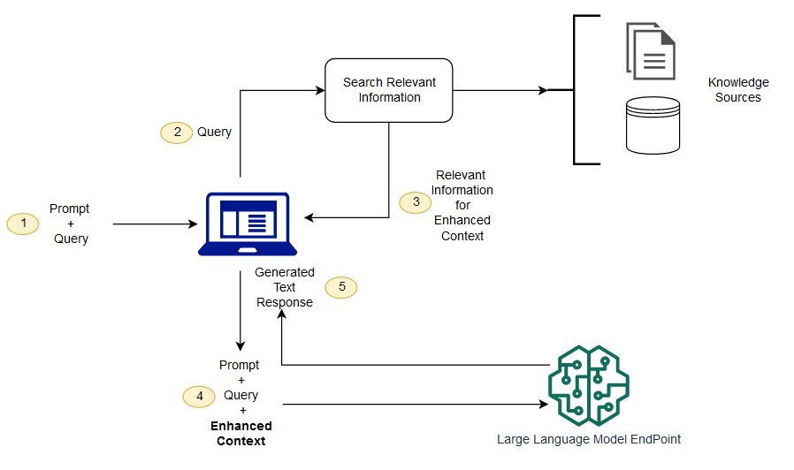

RAG Post
Among the innovative techniques in AI, RAG stands out as a powerful approach that combines the strengths of retrieval-based and generative models. In this blog post, I will explore what RAG is, how it works, and how I made my own.
Introduction
Retrieval-Augmented Generation (RAG) is a hybrid AI model that integrates retrieval-based mechanisms with generative capabilities to produce more accurate and contextually relevant responses. Traditional generative models, such as ChatGPT, rely solely on the data they were trained on, which can limit their ability to provide accurate information if their training data does not cover a specific query in detail. Usually these chat models lack information on current events. Retrieval-based models, on the other hand, fetch relevant information from a large dataset or knowledge base but might not always generate coherent and contextually appropriate responses.
RAG models bridge this gap by combining both approaches: they retrieve relevant documents or pieces of information from a dataset and then use a generative model to create a response based on the retrieved information. This synergy allows RAG models to generate responses that are not only contextually rich but also factually accurate.
How Does RAG Work?
RAG operates in two main stages: retrieval and generation.
Retrieval
In the retrieval stage, the RAG model searches a large dataset or knowledge base for relevant information based on the input query. This dataset can be a collection of documents, web pages, or any other source of information that the model has been trained on. The retrieval process is typically performed using a dense retrieval mechanism, which encodes the input query and the dataset into dense vectors and then calculates the similarity between them to identify the most relevant information.
Generation
Once the relevant information has been retrieved, the RAG model uses a generative mechanism, such as a transformer-based language model, to generate a response based on the retrieved information. The generative model takes the retrieved documents as input and uses them to provide context and generate a coherent and contextually relevant response to the input query.

My Implementaion
I used Wikipedia as my dataset for my RAG model. You can enter a Wikipedia category and it will use the articles in that category to generate a response to your query. Before I could use the Wikipedia articles, I first had to clean the data and convert it into a format that the model could understand. I used the Hugging Face Tokenizers library to tokenize the data and create chunks that the embedding model could use. Chunks are important because a single article can be too large for the model to handle.
The embedding model I used was Jina AI on the Hugging Face Transformers library. I then stored the emebeddings in a csv file and wrote a function that will sort the embeddings based on the similarity to the input query, this is done in O(n) time. I then used give a LLama model the top 5 relevant embeddings and a custom prompt to generate a response. I will link the google colab notebook below.
Conclusion
There are many ways to improve the RAG model I built. One way is to use a vectorized database to store the embeddings and use a more efficient way to search for the most relevant embeddings. I used the LLama model because it was open source and free to use but using other models could produce better/different results.
This little project was a great learning experience for me and I hope to build on it in the future. I learned a lot about RAG models and how they work. I also learned how to use the Hugging Face Transformers library and web text cleaning.
Here's the link to the google colab notebook: RAG Model Thanks for reading!Posted by: Aidan Vidal
Posted on: July 17, 2024